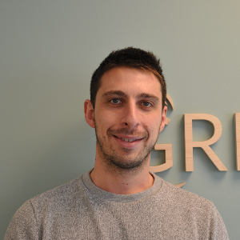

Des ingénieurs spécialistes de l'énergie
GREENBIRDIE réunit environ 50 collaborateurs : ingénieurs, consultants, chefs de projets énergie, experts photovoltaïques, spécialistes du bâtiment, de la donnée énergétique et des marchés de l'énergie.

Gaëtan COLLIN
Président-fondateur
Ingénieur de formation, Gaëtan COLLIN a débuté sa carrière dans la production d'énergie avant de fonder GREENBIRDIE en 2005. Il est expert reconnu en achats d'énergie, performance énergétique, audits, PPA et photovoltaïque. Il participe aux travaux français et internationaux de normalisation consacrés aux audits énergétiques — il anime notamment le groupe d'experts AFNOR qui rédige les normes de la série NF EN 16247 et contribue aux travaux relatifs à ISO 50001.
Antoine LABRUNIE
Directeur technique
Paola PACITTO
Directrice opérationelle

Jonathan QUINTON
Responsable construction